Regression comparison
Download resultsAggregation weights
\widehat y(x)=y_{\rm mean}+y_{\rm std}\sum_{h=1}^{H}\beta_h\mu_h(x)Coefficients can be negative and need not sum to one. Intervals describe coefficient uncertainty; the dashed reference is DE’s fixed 1/H weight.
BDKN

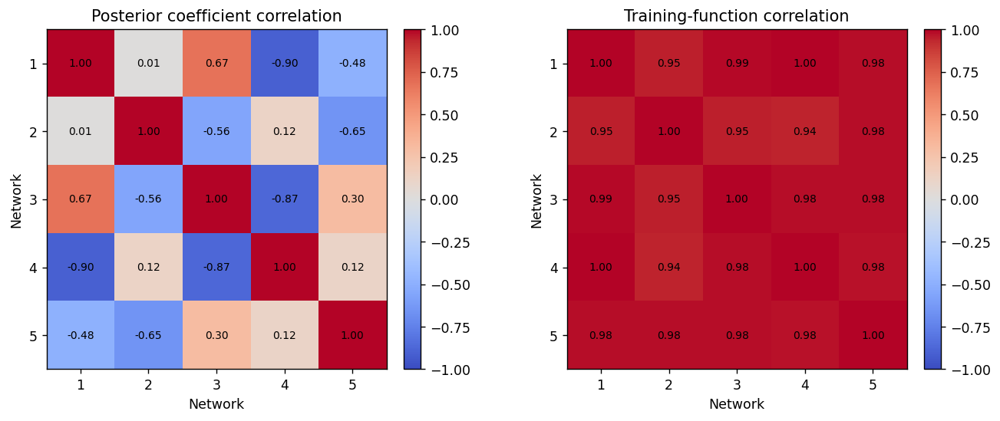


Each density panel uses its own X range for readability; coefficient intervals above share a common axis. Prior reference conditions on fitted noise. Contribution shares use held-out inputs; test targets are used only for scoring.
| Network | β mean | 95% low | 95% high | P(β > 0) | Contribution share | Test RMSE | Test NLL |
|---|---|---|---|---|---|---|---|
| 1 | -1.08889 | -1.12321 | -1.05456 | 0.00000 | 0.37187 | 2.23561 | 24.15182 |
| 2 | -0.20365 | -0.22217 | -0.18513 | 0.00000 | 0.03441 | 1.28450 | 3.71973 |
| 3 | -0.08854 | -0.11880 | -0.05827 | 0.00000 | 0.01182 | 1.22805 | 6.39771 |
| 4 | 1.82726 | 1.78476 | 1.86977 | 1.00000 | 0.39180 | 1.38488 | 53.78197 |
| 5 | 2.82827 | 2.74286 | 2.91369 | 1.00000 | 0.19009 | 1.06486 | 1.58756 |
Functional repulsion · BDKN
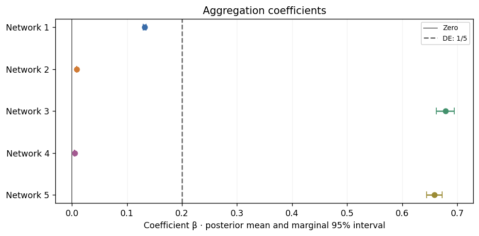
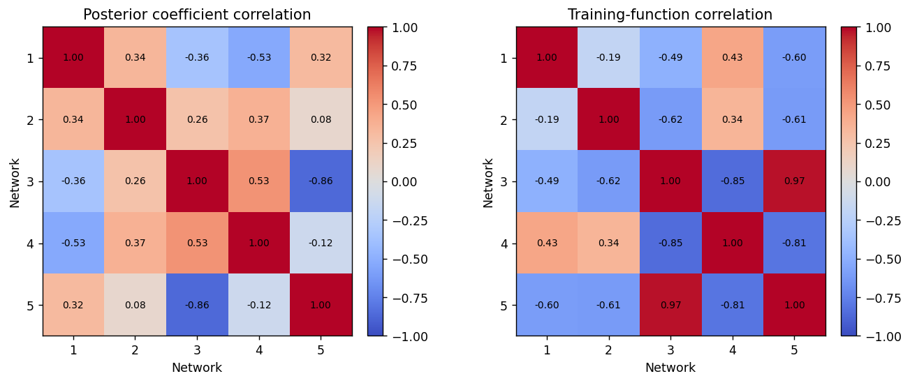
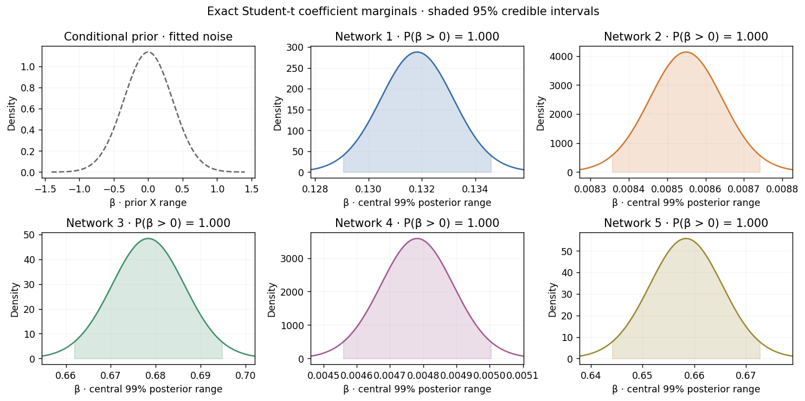
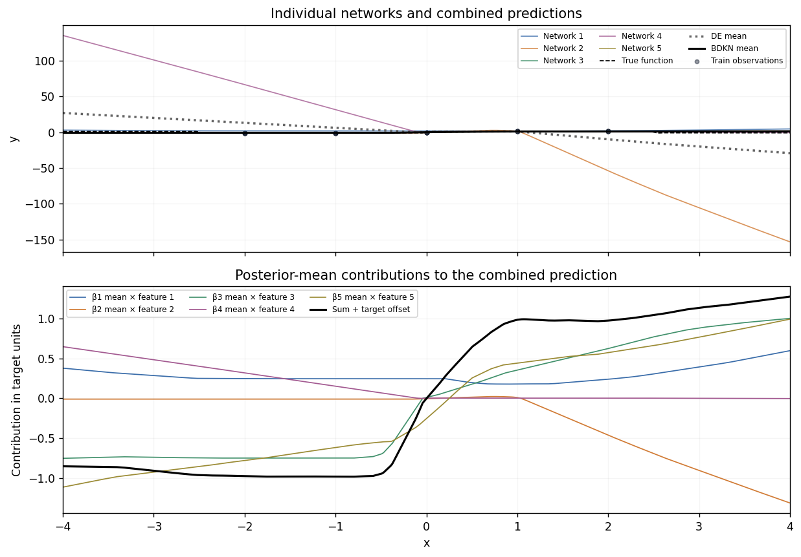
Each density panel uses its own X range for readability; coefficient intervals above share a common axis. Prior reference conditions on fitted noise. Contribution shares use held-out inputs; test targets are used only for scoring.
| Network | β mean | 95% low | 95% high | P(β > 0) | Contribution share | Test RMSE | Test NLL |
|---|---|---|---|---|---|---|---|
| 1 | 0.13182 | 0.12906 | 0.13459 | 1.00000 | 0.14082 | 2.62301 | 2.39851 |
| 2 | 0.00855 | 0.00836 | 0.00874 | 1.00000 | 0.13717 | 57.06467 | 262.43172 |
| 3 | 0.67834 | 0.66188 | 0.69480 | 1.00000 | 0.31829 | 1.39434 | 60.32954 |
| 4 | 0.00478 | 0.00456 | 0.00500 | 1.00000 | 0.07430 | 52.84456 | 3.96528 |
| 5 | 0.65840 | 0.64412 | 0.67268 | 1.00000 | 0.32941 | 1.46558 | 1.85600 |
Weight repulsion · BDKN
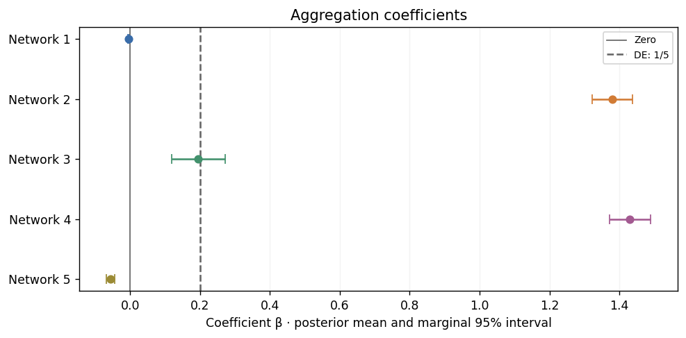
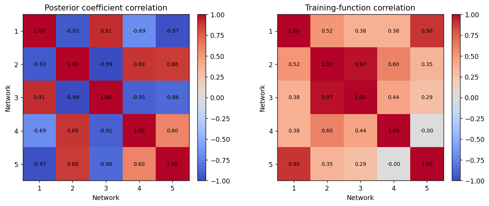
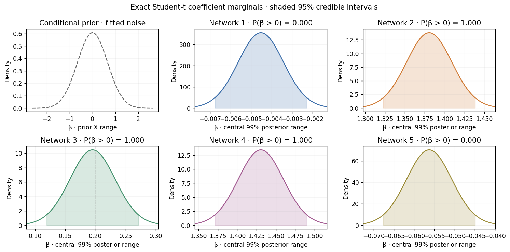
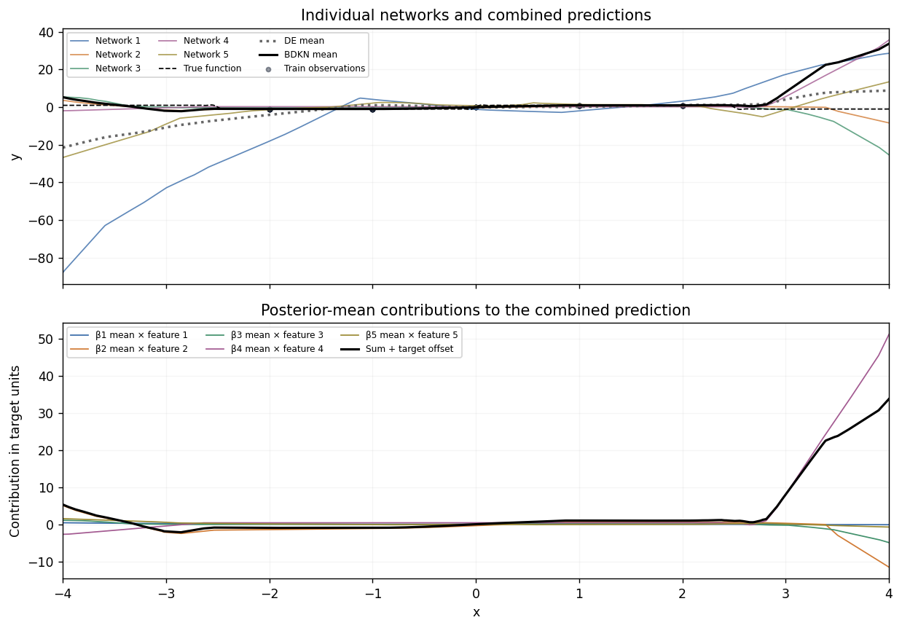
Each density panel uses its own X range for readability; coefficient intervals above share a common axis. Prior reference conditions on fitted noise. Contribution shares use held-out inputs; test targets are used only for scoring.
| Network | β mean | 95% low | 95% high | P(β > 0) | Contribution share | Test RMSE | Test NLL |
|---|---|---|---|---|---|---|---|
| 1 | -0.00452 | -0.00676 | -0.00228 | 0.00009 | 0.01203 | 26.33844 | 6.90708 |
| 2 | 1.38058 | 1.32286 | 1.43830 | 1.00000 | 0.21483 | 1.48877 | 63.32682 |
| 3 | 0.19506 | 0.11888 | 0.27125 | 1.00000 | 0.05983 | 4.25078 | 1.60633 |
| 4 | 1.43058 | 1.37122 | 1.48993 | 1.00000 | 0.67451 | 8.11576 | 2.68599 |
| 5 | -0.05627 | -0.06762 | -0.04492 | 0.00000 | 0.03881 | 7.70736 | 5.06924 |
First-order repulsion · BDKN
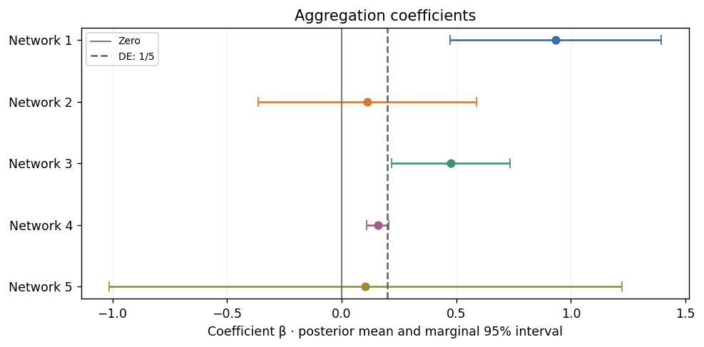
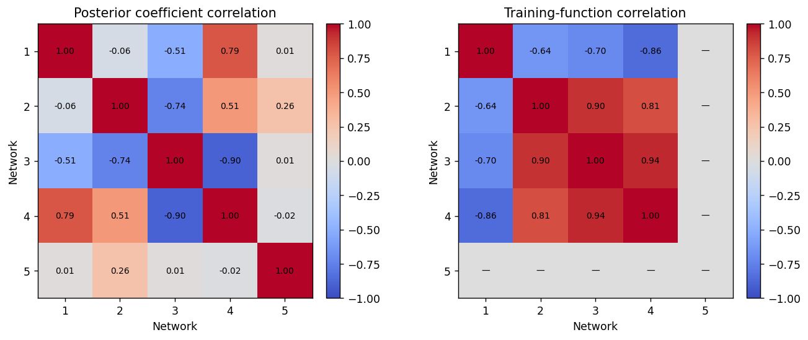
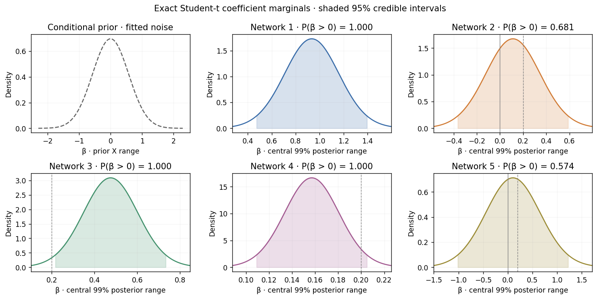
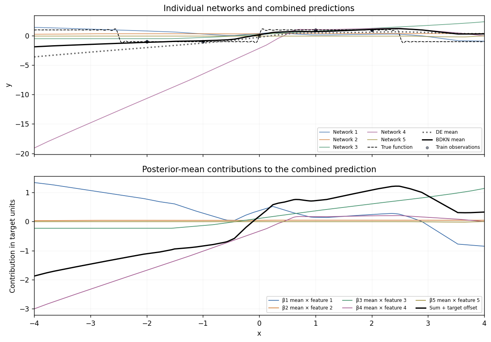
Each density panel uses its own X range for readability; coefficient intervals above share a common axis. Prior reference conditions on fitted noise. Contribution shares use held-out inputs; test targets are used only for scoring.
| Network | β mean | 95% low | 95% high | P(β > 0) | Contribution share | Test RMSE | Test NLL |
|---|---|---|---|---|---|---|---|
| 1 | 0.93396 | 0.47363 | 1.39429 | 0.99992 | 0.27701 | 1.01255 | 1.86078 |
| 2 | 0.11206 | -0.36430 | 0.58843 | 0.68069 | 0.02211 | 1.06518 | 1.49327 |
| 3 | 0.47510 | 0.21708 | 0.73312 | 0.99973 | 0.22290 | 1.52012 | 48.90938 |
| 4 | 0.15709 | 0.10923 | 0.20495 | 1.00000 | 0.47442 | 8.13608 | 2.85360 |
| 5 | 0.10387 | -1.01424 | 1.22197 | 0.57363 | 0.00356 | 0.98127 | 1.41024 |